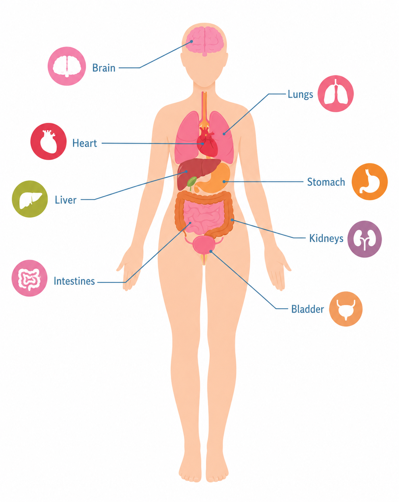

System summary
- Heart: pumps blood.
- Lungs: add oxygen and remove carbon dioxide.
- Blood vessels: carry blood through the body.
- Organs: use oxygen-rich blood to do their jobs.
- Coronary arteries: feed the heart muscle itself.
Junior Medical School · Day 16
A more educational learning module about body organs, the heart, blood flow, oxygen exchange, and how the cardiovascular system works with the lungs and the rest of the body.
Overview
The body’s organs all need oxygen and nutrients. The heart helps deliver them by pumping blood.
In diagrams, oxygen-poor blood is often shown blue and oxygen-rich blood is shown red, even though real blood is always red.
Clickable educational organ map
Click an organ on the body or press one of the organ buttons to study what it does.

The brain is the control center of the body. It helps manage thinking, movement, senses, and body signals.
Heart anatomy
Click each term to read a short explanation.
The heart has four chambers. The atria receive blood, and the ventricles pump blood out.
Blood flow lesson
Read the steps in order.
Blood returns from the body with less oxygen.
The right ventricle sends oxygen-poor blood to the lungs.
Oxygen enters the blood in the lungs.
Oxygen-rich blood returns to the left side of the heart.
The left ventricle pumps oxygen-rich blood to the body.
Lungs + oxygen
The lungs help blood pick up oxygen and get rid of carbon dioxide.
Study check
This is a learning check, not a game score.
Question 1/6